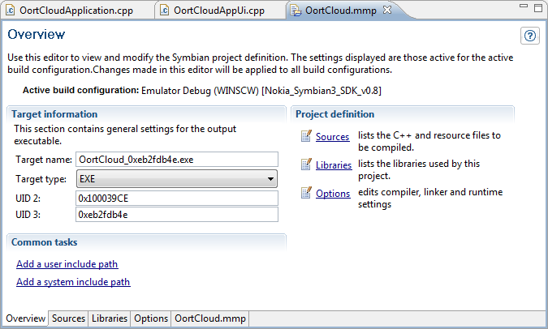
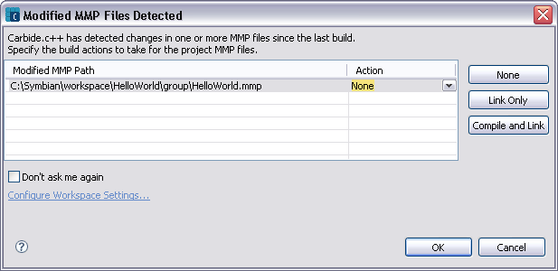

The MMP Editor allows you to view and modify your project definitions. Changes made in the MMP editor are automatically written to the project's .MMP file. You can view the .mmp file by selecting the project_name.mmp tab located along the bottom of the MMP editor.
The MMP Editor is shown when an MMP file is opened from the Project Explorer, C/C++ Projects, or Symbian Project Navigator views. The MMP Editor is shown in Figure 1. MMP editor fields are validated for existing or correct entries. For example, if the UID 2 field is blank the label is highlighted in red. If an error exists in the mmp file, the line where the error occurs is marked and also displayed in the Problems view.

Figure 1 - MMP Editor
| Name | Function |
|---|---|
|
Target name |
Enter the name of the target file. |
|
Target type |
Select the type of target file from the dropdown list. |
|
Target path |
Enter the path to the target file. |
|
UID 2 |
UID 2 is a unique identifier number that identifies the type of interface that the project implements. The values are defined by Symbian:
|
|
UID 3 |
Application UID (or UID3) is used to uniquely identify the binary (EXE or DLL) within the system. The purpose of UID 3 is to prevent one executable from interfering the operation of another executable. |
|
Project definition |
The Project definition group provides links to the Sources, Libraries, and Options windows. You can also select the Sources, Libraries, and Options tabs to open the related window. |
|
Common tasks |
This group provides links to the User and System include path options located in the Options window. |
Any changes made to the MMP file either in Carbide or using an external editor are detected. If the build is for emulation, these changes are detected and used automatically.
For other build types like GCCE you are presented with the Modified MMP Files Detected dialog (Figure 2) and asked which build action to take for each MMP file that has changed. Set the build option for each listed MMP file and click OK.

Figure 2 - Modified MMP Files Detected dialog
The options are identical to the workspace setting Default action to take when MMP files are modified option in the Build preference panel. Click the Configure Workspace Settings... to open the Build preference panel to set the default build options for the workspace. The options can also be modified at the project level in the Properties for <project> > Carbide Project Settings panel.